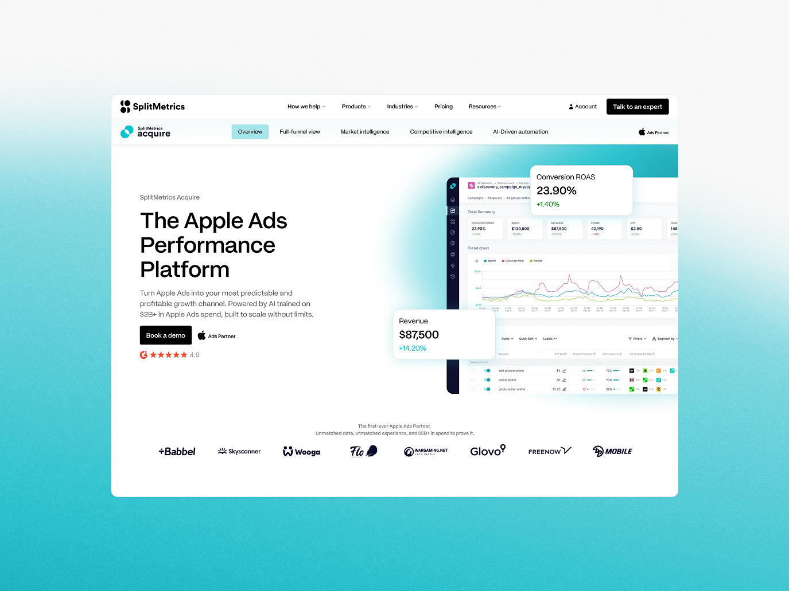
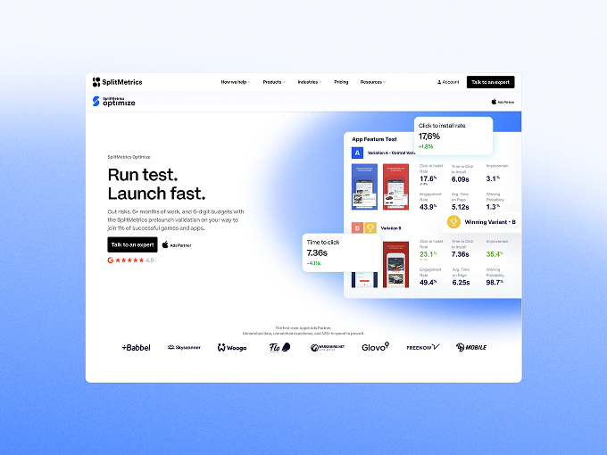
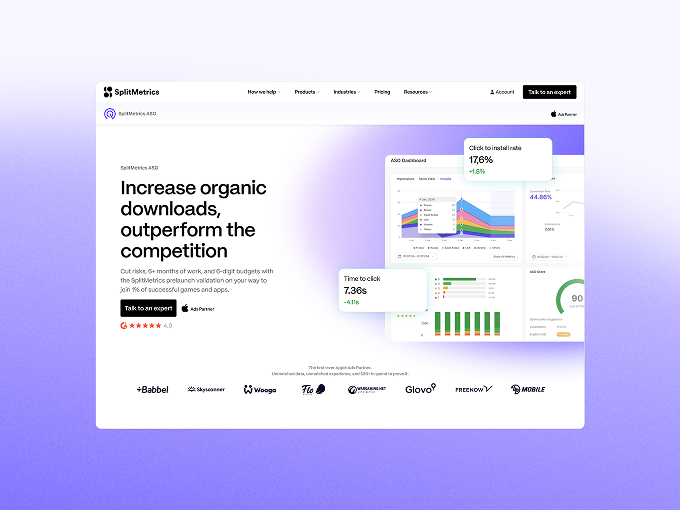
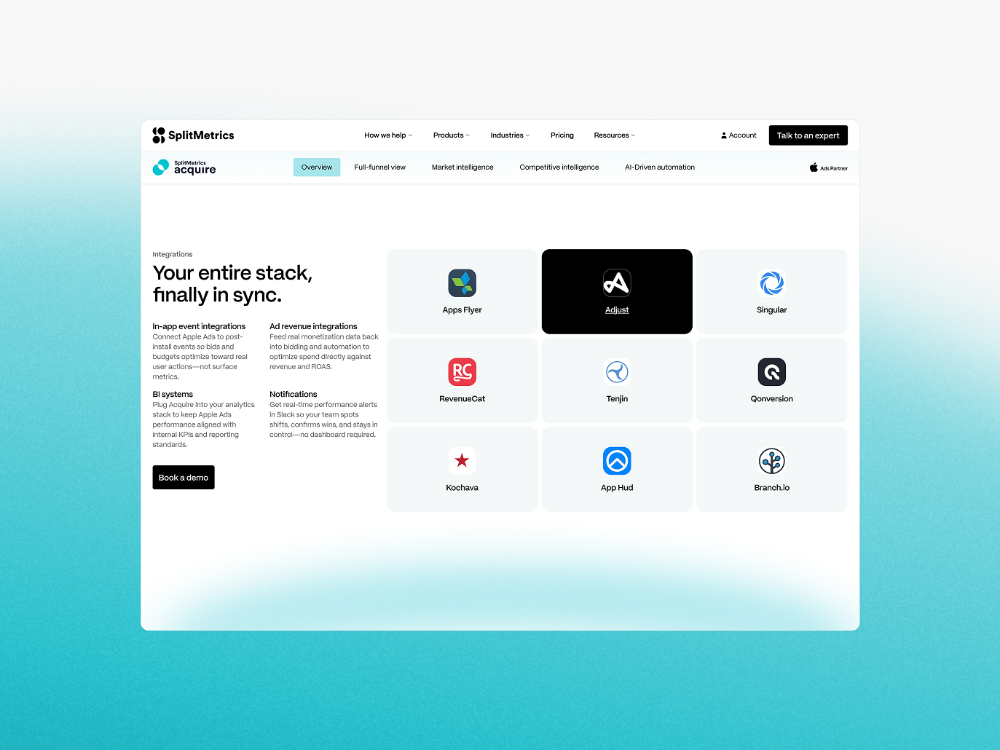
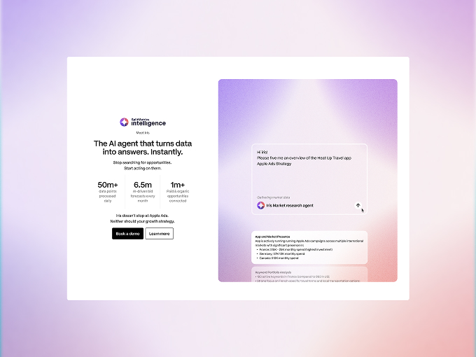
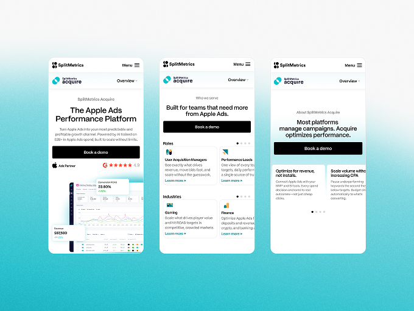
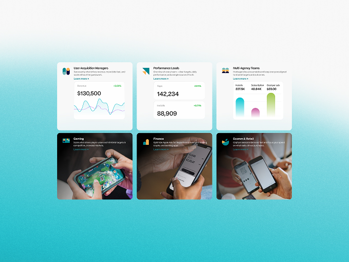
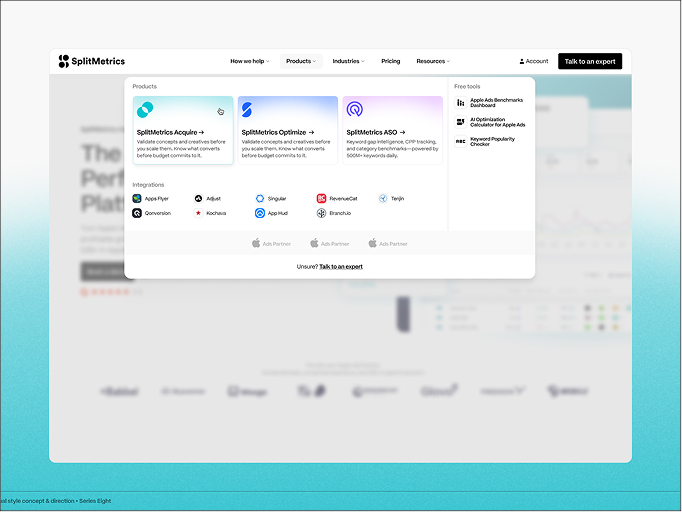

SplitMetrics
Splitting SplitMetrics, On Purpose
SplitMetrics is a mobile app growth platform and Apple Search Ads Partner, but its website hadn't kept pace: a SaaS product and a full-service agency arm were fighting for the same navigation and forms, and analytics showed people dropping off before they reached a demo booking. I led the project end to end, from a hopes-and-fears workshop with the CEO and CMO through to design system handover, anchored on one metric from session one: lead-to-demo conversion, not traffic.
Results
- 6 full IA restructures to cleanly separate the SaaS product from the agency offer
- Book a Demo flow rebuilt to route by entry point, cutting the friction behind the drop-off
- 200+ custom illustrated product assets, animated for web and sales collateral
- Full atomic design system delivered for client dev team handover

The Challenge
SplitMetrics sells two different things to two different buyers, a self-serve SaaS product and a hands-on agency service, but its site treated them as one undifferentiated flow. The data made the cost of that clear: traffic arrived high-intent and already comparing tools, yet Google Analytics and Hotjar showed people bouncing before they ever reached a Book a Demo form that asked for more than it needed. The product wasn't helping its own case either, screenshots too small to show what the platform actually did, leaving visitors who wanted proof before talking to sales without it.


The Approach
Discovery started broad: a hopes-and-fears workshop with the CEO and CMO, a GA/Hotjar audit, and a landscape review benchmarked against SaaS leaders like Notion and Figma, not just ASO tools, so the site would read as a modern product rather than a niche one. The data threw up one surprise: Book a Demo's 61% bounce rate looked like a broken form, until the behaviour underneath showed people qualifying themselves rather than abandoning it, so I added softer exits like “view pricing first” instead of stripping the form back. Acquire, meanwhile, was quietly outperforming everything else, so I made it the template the rest of the site would follow.
The harder problem was structural. SaaS product and agency services were genuinely intertwined, and separating them took six full restructures before it held together. What settled it was talking to the client's agency contacts and hearing how differently they ran ASO across Apple's App Store versus Google Play, proof the split needed to live in the architecture, not just the styling. That same logic reshaped Book a Demo, routing the form by entry point instead of asking everyone the same questions, before a MoSCoW workshop split the build into an MVP and future phases.
Definition brought it together: creative concepts that modernised the brand for B2B SaaS without losing what made it recognisable, and a full atomic design system built in parallel so the client's own dev team could pick it up. The one gap craft alone couldn't close was proof, the product wasn't visible enough, so I commissioned 200+ custom illustrated assets and had them animated for use across the site and beyond.

The Outcome
The site is currently in build with SplitMetrics' own development team, so there's no live conversion data yet, but what's shipping is built on evidence rather than a guess: an IA that finally separates SaaS product from agency service, a Book a Demo flow designed around the exact drop-off the data showed, and a design system built for a team other than Series Eight to build from. SplitMetrics operates at a level (Apple Search Ads Partner, SplitMetrics Optimize named ASO Tool of the Year) that needed a site holding up to a sophisticated, global audience, and the structure is built to do exactly that once it goes live.


Reflection
This was as much a stakeholder and structure problem as a design one. Getting six iterations deep on an IA before it was right, and building a system another team could actually build from, mattered more here than any single page design.

